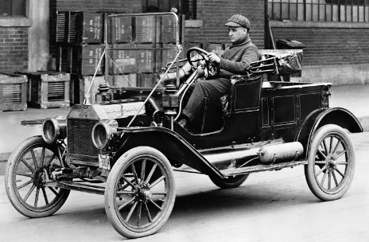
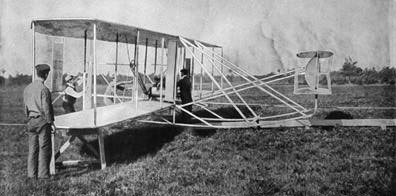
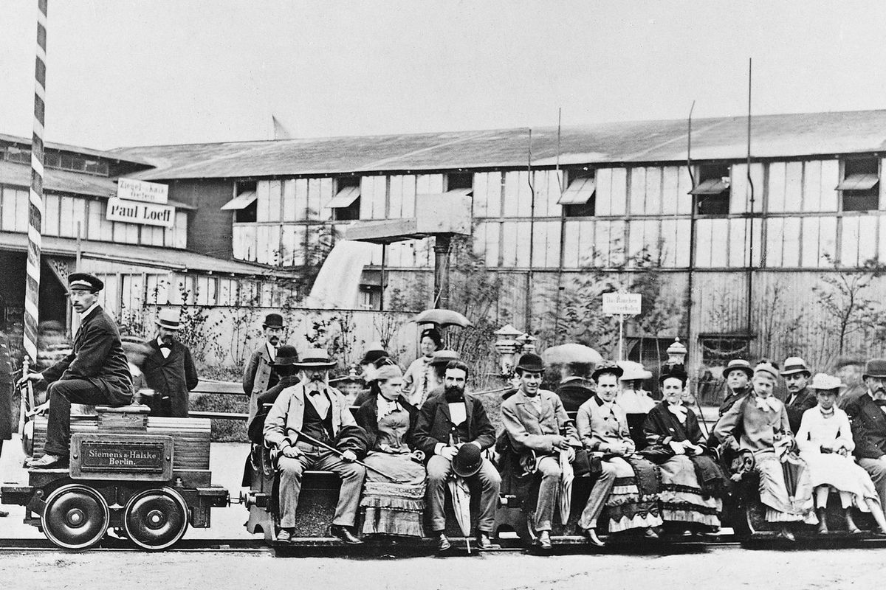

"Transportation in the Early 20th Century"
Transportasi di Awal Abad ke-20
Di awal abad ke-20, transportasi mengalami transformasi lebih lanjut dengan berkembangnya industri otomotif dan penerbangan. Mobil mulai diproduksi secara massal berkat Henry Ford dengan model Ford T yang mempopulerkan konsep produksi massal.
Pada saat yang sama, pesawat terbang mulai diuji coba dan diperkenalkan, memberikan dampak besar pada perjalanan internasional yang lebih cepat dan efisien. Selain itu, jaringan kereta
api semakin berkembang pesat, menghubungkan banyak wilayah dengan lebih efektif. Secara keseluruhan, transportasi di awal abad ke-20 lebih terjangkau, lebih cepat, dan lebih
terintegrasi, berkat kemajuan teknologi dan inovasi industri yang lebih matang dibandingkan dengan era Revolusi Industri yang masih dalam tahap awal perkembangan.
Di era ini, transportasi sudah mengalami banyak perubahan dan sudah mampu dinikmati olehsemua kalangan masyarakat. Sehingga, berikut adalah contoh transportasi di awal abad ke-20:
- Dilansir dari p3.uma.ac.id, Di awal abad ke-20 ini mobil-mobil sederhana yang sudah diciptakan mulai mengalami evolusi. Saat pertama diperkenalkan, mobil
saat itu belum menggunakan stir bulat seperti yang kita kenal saat ini. Sebelum 1900, stir mobil berbentuk setengah lingaran saja. Bahkan ada yang menggunakan semacam
tongkat untuk menggerakan roda depan ke kanan dan ke kiri. Setelah 1900, stir bulat mulai dipakai dan memang lebih memudahkan pergerakan mobil. Kecepatan mobil pun sudah mulai bertambah tinggi. Bisa mencapai 15-20 km/jam. Sudah lebih
cepat dibanding kecepatan orang berjalan kaki yang sekitar 6 km/jam. Karena itulah pemerintah negara bagian Alabama, Amerika Serikat, membatasi
kecepatan maksimal mobil saat itu hanya 12 km/jam. Di era ini Ford mulai mengenalkan Model T yang fenomenal. Berkat bantuan mesin, proses pembuatan
mobil ini melesat dari 7,5 unit/jam menjadi 146 unit/jam. Pada 1913 lahir mesin hybrid pertama di dunia. Adalah Ferdinand Porsche yang menemukan mesin
hybrid yang diberi nama Lohne-Porsche Mixte Hybrid. Usia Porsche saat menemukan mesin ini baru 18 tahun.

Klik pada gambar untuk info selengkapnya
- Dilansir dari traveloka.com, pada awal abad ke-20 Wright bersaudaraberhasil menciptakan pesawat terbang pertama yang dapat dikendalikan. Orville dan
Wilbur Wright adalah dua saudara asal Amerika yang dikenal sebagai penemu pesawat terbang pertama yang dapat dikendalikan. Pada 17 Desember 1903,
mereka berhasil menerbangkan pesawat yang disebut Flyer I di Kitty Hawk, North Carolina. Penerbangan ini berlangsung selama 12 detik dan menempuh
jarak 120 kaki (sekitar 36 meter) dengan Orville sebagai pilot. Flyer I memiliki lebar sayap 40 kaki, berat 750 pon, dan dilengkapi mesin 12 hp.
Keberhasilan ini menandai tonggak sejarah dalam dunia aviasi. Setelah keberhasilan Wright bersaudara, pesawat mengalami banyak perubahan dan inovasi. Perkembangan teknologi dan desain pesawat terus berlanjut,
membawa kita pada era baru dalam dunia penerbangan

Klik pada gambar untuk info selengkapnya
- Dilansir dari kompas.com, kereta api merupakan salah satu moda transportasi yang dibuat untuk mendukung kenyamanan bagi penumpang.
Kebutuhan efisiensi waktu via jalur darat menjadikan kereta sebagai pilihan utama. Awalnya kereta dikembangkan untuk menunjang transportasi pertambangan. Dalam perkembangannya, kereta mulai digunakan untuk menarik
gerbong penumpang dengan lokomotif tenaga uapnya.Untuk menunjang efektivitas
dan kemajuan, beberapa perusahaan lokomotif mengembangkan cara baru agar kereta bisa meluncur lebih cepat dan mengurangi pencemaran. Akhirnya cara
itu bisa dilakukan dengan menggunakan listrik sebagai daya untuk menggerakkan mesin kereta. Sampai sekarang, jenis ini banyak dikenal dengan sebutan kereta listrik. Kereta yang menggunakan tenaga listrik
mulai diperkenalkan ke publik hari ini 140 tahun yang lalu, tepatnya pada 31 Mei 1879. Perusahaan asal Jerman bernama Siemens & Halske
mempelopori era kemajuan ini. Berkat insinyur terbaiknya, penemuan ini menjadi penting dalam industri perkeretaapian.

Klik pada gambar untuk info selengkapnya